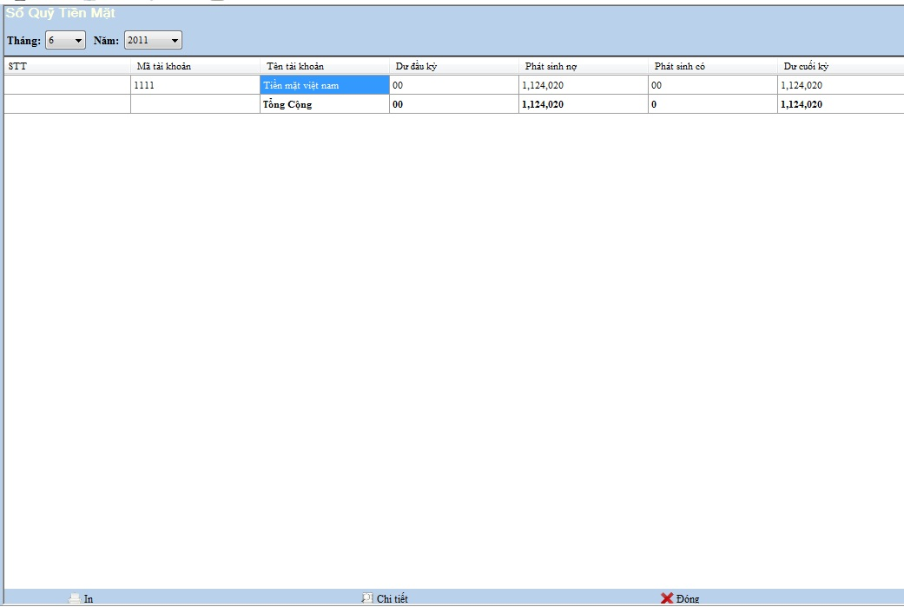
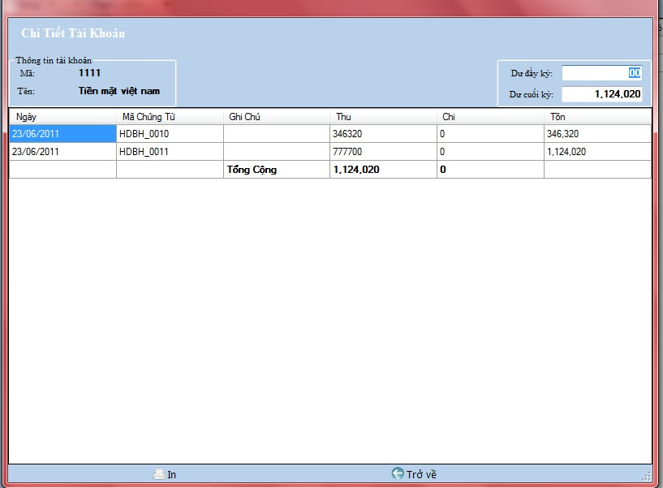

Cách thao tác với quản lý Sổ quỹ:
Vào Hệ thống ->Sổ quỹ

Thanh tiêu đề: Chứa tên của nghiệp vụ đang làm việc.
Tìm kiếm: Chọn loại muốn tìm kiếm , bạn nhập vào tên hàng cần tìm .
Thanh công cụ : Chứa các công cụ phục vụ việc quản lý,theo dõi, bổ sung sổ quỹ
a.Chi tiết
Chọn nút chi tiết và khai báo các thông tin trên hộp thoại xuất hiện .
- Kích chọn Chi tiết tài khoản hiện thời hộp thoại bán buôn xuất hiện

- Chọn In để in hóa đơn chi tiết tài khoản bán buôn
- Kích đúp chọn nút In ở menu dưới để in hóa đơn sổ quỹ
- Chọn Trở về ở thanh công cụ dưới để trở về Danh mục quản lý sổ quỹ